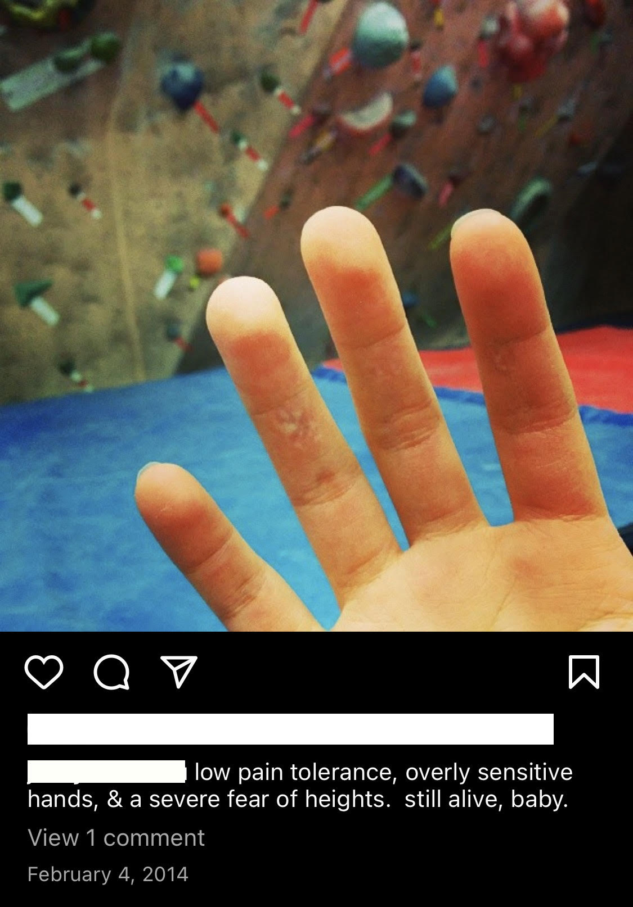
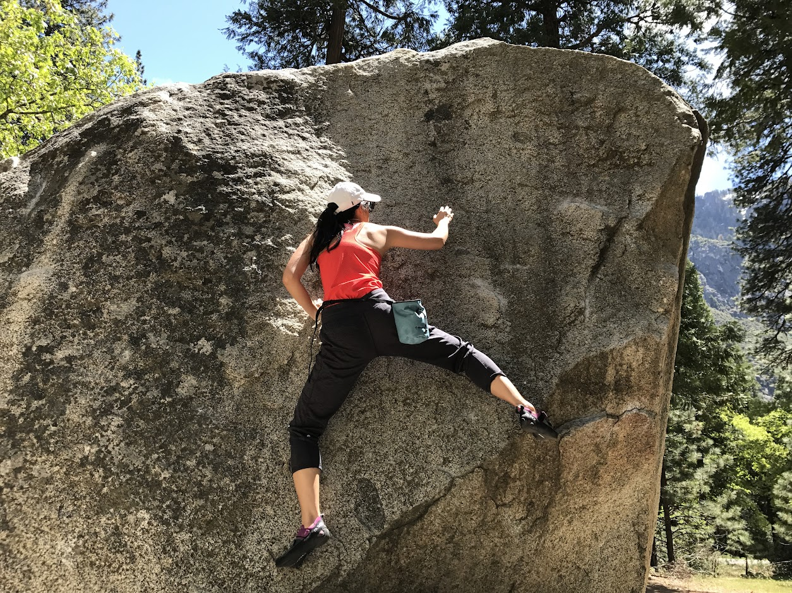
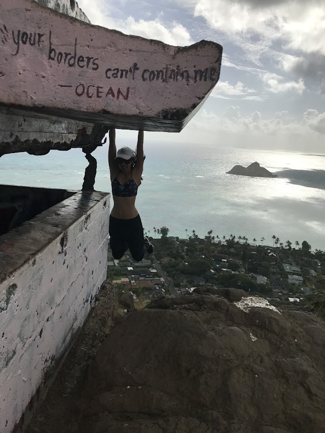
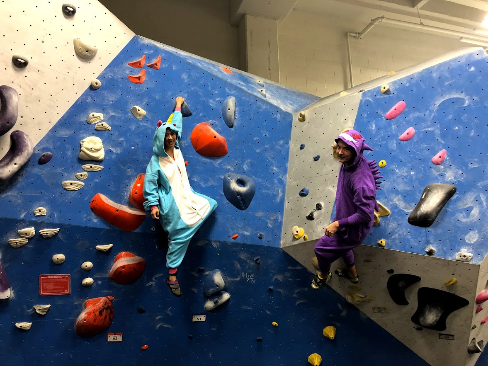
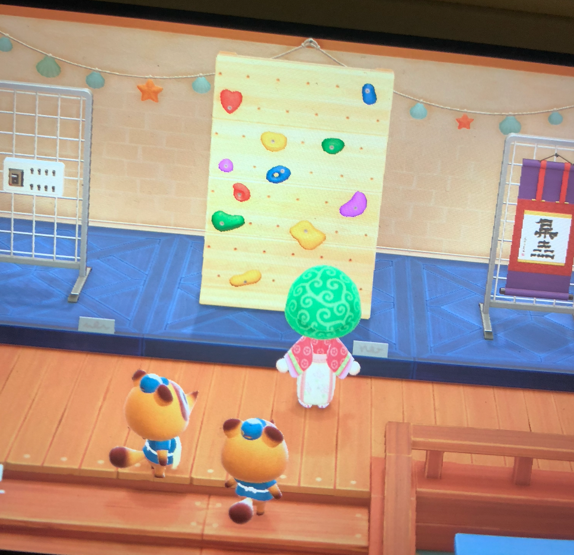
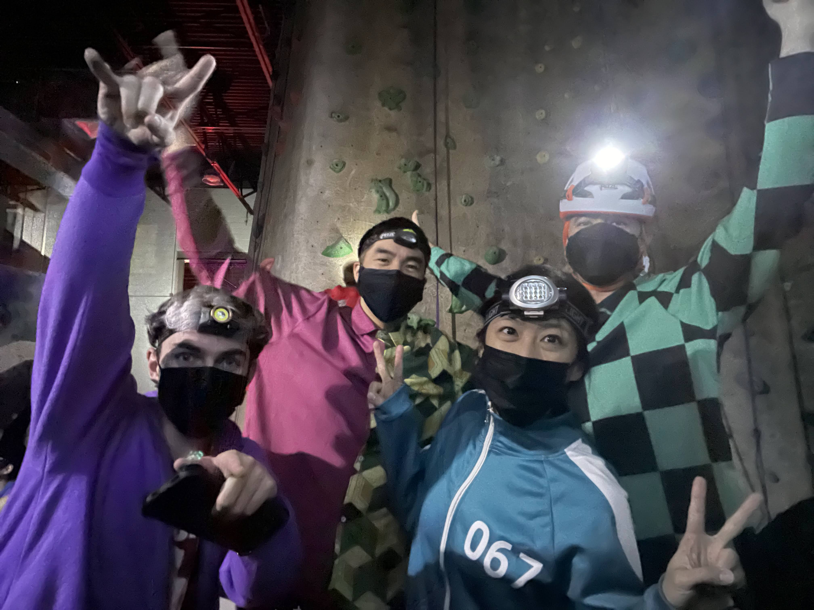
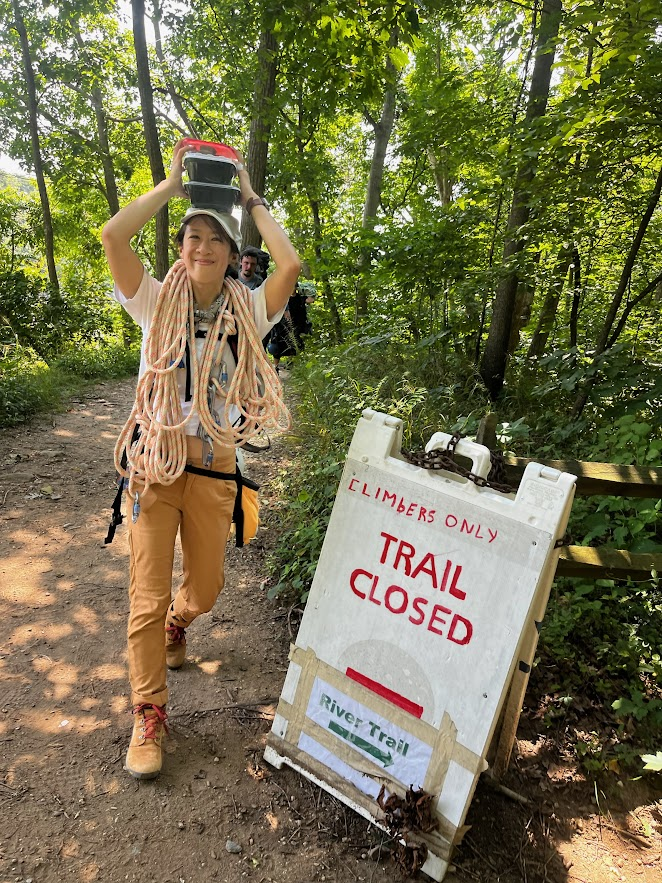
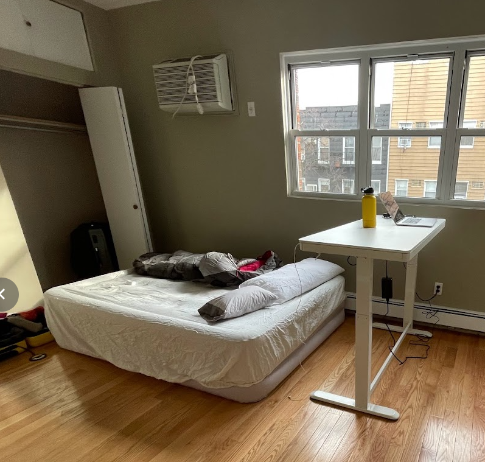

climbing log

- Baby's first climb.

- Move to SF. Everyone climbs. Social pressure is ON.
- Fear of heights on 5.6s
- Touchstone member.

- Climbing casually.
- Weekly top rope partner.
- Gossip on the mats.
- First outdoor experience, yosemite boulder.

- Working through 5.11s.
- Infrequnt bouldering between v0-v3.
- Everything you see is climbable.
- Want to lead but too scared.

- Holidays are now for climbing.

- Covid years: I am a potato.

- Start to climb again in VA after two years off.
- Visit Vital for the first time!

- Exploring Taipei gyms!
- Decided to become a (more) serious climber. <3 And birth of @allezjas
- Top rope outside for the first time!
- First guided multipich at Flatiron (5.6) and Red Rocks (5.7ish).
- Finally lead certified.
- First climbing competition, first climbing league.

- Move to NY.
- Become a forerunner at Vital?????